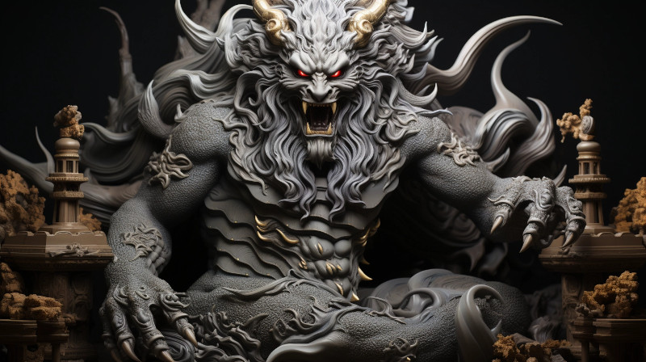

Figure 1: Gurth of the Veiled Thaerith
Etymology: ’Thaerith’ could come from the words ’Thae’, meaning ’hidden’ or ’secret’, and ’Rith’, relating to ’knowledge’ or ’lore’.
Origins: The Veiled Thaerith originated during a turbulent period in the Second Era, the Great Apostasy, by a group of scholars and mages who discovered esoteric aspects of Gurth’s worship through forbidden texts or during a time of exile.
The Aenarim could be the established religious authority, ensuring that the worship of Gurth adheres to traditional practices and maintains the political stability of the Dathakhian Empire. They could be the official face of the religion, with public temples and a significant role in state ceremonies.
In contrast, The Veiled Thaerith could operate at the fringes of this orthodoxy, engaging in more mystical and arcane practices. They might hold secret gatherings and initiation rites, and possess hidden knowledge about the afterlife and Gurth’s true will, as they interpret it.